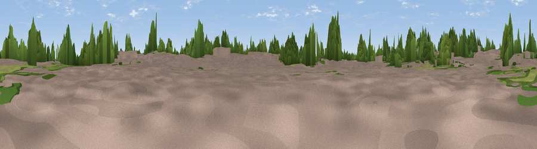

Viewpoint near Stamford
#41246 in England · top 70% of its area beats it · near StamfordWhere it is
The exact computed spot (TF 02458 08032). Click the marker for map links.
The view, rendered

A 360° render of this exact spot computed from the terrain model, tree cover and land cover — summer colours, afternoon light, calibrated against photographs of famous viewpoints. Real trees, hedges and buildings will differ in detail.
The panorama
Grey silhouette: terrain skyline in each direction (720 bearings, Earth curvature and refraction included). Dashed green: skyline with trees (+15 m) and buildings (+8 m) as obstacles. Blue strip: how far the ground is visible on each bearing.
Where the view opens
Wedge length = distance to the farthest visible ground on that bearing (vegetation-aware). Rings at 10, 25 and 50 km.
What fills the view
33% built-up · 26% cropland · 20% woodland · 20% grassland
Angular shares of the visible panorama (visual magnitude), not map area. Landscape diversity 0.60 (0–1 Shannon).
Key numbers
More beautiful places nearby
The staircase of upgrades: each row has a higher view potential than everything closer. Driving times are estimates from straight-line distance, calibrated against real road routing — check an actual route before setting out.
| Place | Direction | Drive | Score |
|---|---|---|---|
| Viewpoint near Belmesthorpe | ENE · 3 km | ~6 min | 30.8 |
| Viewpoint near Easton on the Hill | SSW · 3 km | ~8 min | 32.3 |
| Viewpoint near Ryhall | N · 4 km | ~9 min | 32.9 |
| Viewpoint near Little Casterton | NNW · 4 km | ~9 min | 36.0 |
| Viewpoint near Duddington | S · 8 km | ~16 min | 43.8 |
| Viewpoint near Toft | NNE · 11 km | ~20 min | 49.0 |
| Viewpoint near Owston | W · 25 km | ~40 min | 49.9 |
| Robin-a-Tiptoe Hill | W · 25 km | ~41 min | 54.6 |
52.66034, -0.48659 · source: osm peak · position refined by local search. Computed location — check access rights before visiting.